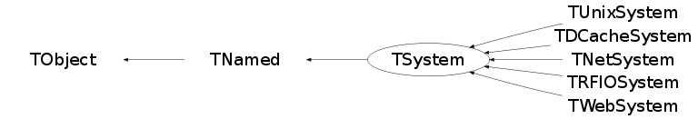

class TSystem: public TNamed
TSystem Abstract base class defining a generic interface to the underlying Operating System. This is not an ABC in the strict sense of the (C++) word. For every member function there is an implementation (often not more than a call to AbstractMethod() which prints a warning saying that the method should be overridden in a derived class), which allows a simple partial implementation for new OS'es.
Function Members (Methods)
public:
| TSystem(const char* name = "Generic", const char* title = "Generic System") | |
| virtual | ~TSystem() |
| virtual void | Abort(int code = 0) |
| void | TObject::AbstractMethod(const char* method) const |
| virtual int | AcceptConnection(int sock) |
| virtual Bool_t | AccessPathName(const char* path, EAccessMode mode = kFileExists) |
| virtual void | AddDynamicPath(const char* pathname) |
| virtual void | AddFileHandler(TFileHandler* fh) |
| virtual void | AddIncludePath(const char* includePath) |
| virtual void | AddLinkedLibs(const char* linkedLib) |
| virtual void | AddSignalHandler(TSignalHandler* sh) |
| virtual void | AddStdExceptionHandler(TStdExceptionHandler* eh) |
| virtual void | AddTimer(TTimer* t) |
| virtual int | AnnounceTcpService(int port, Bool_t reuse, int backlog, int tcpwindowsize = -1) |
| virtual int | AnnounceUdpService(int port, int backlog) |
| virtual int | AnnounceUnixService(int port, int backlog) |
| virtual int | AnnounceUnixService(const char* sockpath, int backlog) |
| virtual void | TObject::AppendPad(Option_t* option = "") |
| virtual const char* | BaseName(const char* pathname) |
| void | Beep(Int_t freq = -1, Int_t duration = -1, Bool_t setDefault = kFALSE) |
| virtual void | TObject::Browse(TBrowser* b) |
| Bool_t | cd(const char* path) |
| virtual Bool_t | ChangeDirectory(const char* path) |
| virtual int | Chmod(const char* file, UInt_t mode) |
| static TClass* | Class() |
| virtual const char* | TObject::ClassName() const |
| virtual void | CleanCompiledMacros() |
| virtual void | TNamed::Clear(Option_t* option = "") |
| virtual TObject* | TNamed::Clone(const char* newname = "") const |
| virtual void | CloseConnection(int sock, Bool_t force = kFALSE) |
| virtual void | Closelog() |
| virtual int | ClosePipe(FILE* pipe) |
| virtual Int_t | TNamed::Compare(const TObject* obj) const |
| virtual int | CompileMacro(const char* filename, Option_t* opt = "", const char* library_name = "", const char* build_dir = "", UInt_t dirmode = 0) |
| virtual char* | ConcatFileName(const char* dir, const char* name) |
| virtual void | TNamed::Copy(TObject& named) const |
| virtual int | CopyFile(const char* from, const char* to, Bool_t overwrite = kFALSE) |
| virtual void | TObject::Delete(Option_t* option = "")MENU |
| virtual const char* | DirName(const char* pathname) |
| virtual void | DispatchOneEvent(Bool_t pendingOnly = kFALSE) |
| virtual Int_t | TObject::DistancetoPrimitive(Int_t px, Int_t py) |
| virtual void | TObject::Draw(Option_t* option = "") |
| virtual void | TObject::DrawClass() constMENU |
| virtual TObject* | TObject::DrawClone(Option_t* option = "") constMENU |
| virtual void | TObject::Dump() constMENU |
| virtual char* | DynamicPathName(const char* lib, Bool_t quiet = kFALSE) |
| virtual Func_t | DynFindSymbol(const char* module, const char* entry) |
| virtual void | TObject::Error(const char* method, const char* msgfmt) const |
| virtual Int_t | Exec(const char* shellcmd) |
| virtual void | TObject::Execute(const char* method, const char* params, Int_t* error = 0) |
| virtual void | TObject::Execute(TMethod* method, TObjArray* params, Int_t* error = 0) |
| virtual void | TObject::ExecuteEvent(Int_t event, Int_t px, Int_t py) |
| virtual void | Exit(int code, Bool_t mode = kTRUE) |
| virtual void | ExitLoop() |
| virtual Bool_t | ExpandPathName(TString& path) |
| virtual char* | ExpandPathName(const char* path) |
| virtual void | TObject::Fatal(const char* method, const char* msgfmt) const |
| virtual void | TNamed::FillBuffer(char*& buffer) |
| virtual const char* | FindFile(const char* search, TString& file, EAccessMode mode = kFileExists) |
| virtual TObject* | TObject::FindObject(const char* name) const |
| virtual TObject* | TObject::FindObject(const TObject* obj) const |
| virtual void | FreeDirectory(void* dirp) |
| virtual TSystem::EAclicMode | GetAclicMode() const |
| virtual Int_t | GetAclicProperties() const |
| void | GetBeepDefaults(Int_t& freq, Int_t& duration) const |
| virtual const char* | GetBuildArch() const |
| virtual const char* | GetBuildCompiler() const |
| virtual const char* | GetBuildCompilerVersion() const |
| virtual const char* | GetBuildDir() const |
| virtual const char* | GetBuildNode() const |
| virtual int | GetCpuInfo(CpuInfo_t* info, Int_t sampleTime = 1000) const |
| virtual const char* | GetDirEntry(void* dirp) |
| virtual void* | GetDirPtr() const |
| virtual Option_t* | TObject::GetDrawOption() const |
| static Long_t | TObject::GetDtorOnly() |
| virtual const char* | GetDynamicPath() |
| virtual Int_t | GetEffectiveGid() |
| virtual Int_t | GetEffectiveUid() |
| virtual const char* | Getenv(const char* env) |
| static Int_t | GetErrno() |
| virtual const char* | GetError() |
| const char* | GetErrorStr() const |
| virtual const char* | GetFlagsDebug() const |
| virtual const char* | GetFlagsOpt() const |
| virtual Int_t | GetFPEMask() |
| virtual TString | GetFromPipe(const char* command) |
| virtual int | GetFsInfo(const char* path, Long_t* id, Long_t* bsize, Long_t* blocks, Long_t* bfree) |
| virtual Int_t | GetGid(const char* group = 0) |
| virtual UserGroup_t* | GetGroupInfo(Int_t gid) |
| virtual UserGroup_t* | GetGroupInfo(const char* group = 0) |
| virtual TInetAddress | GetHostByName(const char* server) |
| virtual const char* | TObject::GetIconName() const |
| virtual const char* | GetIncludePath() |
| virtual const char* | GetLibraries(const char* regexp = "", const char* option = "", Bool_t isRegexp = kTRUE) |
| virtual const char* | GetLinkdefSuffix() const |
| virtual const char* | GetLinkedLibs() const |
| virtual TSeqCollection* | GetListOfFileHandlers() const |
| virtual TSeqCollection* | GetListOfSignalHandlers() const |
| virtual TSeqCollection* | GetListOfStdExceptionHandlers() const |
| virtual TSeqCollection* | GetListOfTimers() const |
| virtual const char* | GetMakeExe() const |
| virtual const char* | GetMakeSharedLib() const |
| virtual int | GetMemInfo(MemInfo_t* info) const |
| virtual const char* | TNamed::GetName() const |
| virtual char* | TObject::GetObjectInfo(Int_t px, Int_t py) const |
| static Bool_t | TObject::GetObjectStat() |
| virtual const char* | GetObjExt() const |
| virtual Option_t* | TObject::GetOption() const |
| virtual int | GetPathInfo(const char* path, FileStat_t& buf) |
| int | GetPathInfo(const char* path, Long_t* id, Long_t* size, Long_t* flags, Long_t* modtime) |
| int | GetPathInfo(const char* path, Long_t* id, Long64_t* size, Long_t* flags, Long_t* modtime) |
| virtual TInetAddress | GetPeerName(int sock) |
| virtual int | GetPid() |
| virtual int | GetProcInfo(ProcInfo_t* info) const |
| virtual int | GetServiceByName(const char* service) |
| virtual char* | GetServiceByPort(int port) |
| virtual TInetAddress | GetSockName(int sock) |
| virtual int | GetSockOpt(int sock, int kind, int* val) |
| virtual const char* | GetSoExt() const |
| virtual int | GetSysInfo(SysInfo_t* info) const |
| virtual const char* | TNamed::GetTitle() const |
| virtual Int_t | GetUid(const char* user = 0) |
| virtual UInt_t | TObject::GetUniqueID() const |
| virtual UserGroup_t* | GetUserInfo(Int_t uid) |
| virtual UserGroup_t* | GetUserInfo(const char* user = 0) |
| virtual TList* | GetVolumes(Option_t*) const |
| virtual Bool_t | TObject::HandleTimer(TTimer* timer) |
| virtual ULong_t | TNamed::Hash() const |
| virtual const char* | HomeDirectory(const char* userName = 0) |
| virtual const char* | HostName() |
| virtual void | IgnoreInterrupt(Bool_t ignore = kTRUE) |
| virtual void | IgnoreSignal(ESignals sig, Bool_t ignore = kTRUE) |
| Bool_t | InControl() const |
| virtual void | TObject::Info(const char* method, const char* msgfmt) const |
| virtual Bool_t | TObject::InheritsFrom(const char* classname) const |
| virtual Bool_t | TObject::InheritsFrom(const TClass* cl) const |
| virtual Bool_t | Init() |
| virtual void | InnerLoop() |
| virtual void | TObject::Inspect() constMENU |
| void | TObject::InvertBit(UInt_t f) |
| virtual TClass* | IsA() const |
| virtual Bool_t | IsAbsoluteFileName(const char* dir) |
| virtual Bool_t | TObject::IsEqual(const TObject* obj) const |
| virtual Bool_t | IsFileInIncludePath(const char* name, char** fullpath = 0) |
| virtual Bool_t | TObject::IsFolder() const |
| Bool_t | TObject::IsOnHeap() const |
| virtual Bool_t | IsPathLocal(const char* path) |
| virtual Bool_t | TNamed::IsSortable() const |
| Bool_t | TObject::IsZombie() const |
| virtual int | Link(const char* from, const char* to) |
| virtual void | ListLibraries(const char* regexp = "") |
| virtual void | ListSymbols(const char* module, const char* re = "") |
| virtual int | Load(const char* module, const char* entry = "", Bool_t system = kFALSE) |
| virtual void | TNamed::ls(Option_t* option = "") const |
| virtual int | MakeDirectory(const char* name) |
| void | TObject::MayNotUse(const char* method) const |
| virtual int | mkdir(const char* name, Bool_t recursive = kFALSE) |
| virtual Long_t | NextTimeOut(Bool_t mode) |
| virtual Bool_t | TObject::Notify() |
| virtual void | NotifyApplicationCreated() |
| virtual TTime | Now() |
| void | TObject::Obsolete(const char* method, const char* asOfVers, const char* removedFromVers) const |
| virtual int | OpenConnection(const char* server, int port, int tcpwindowsize = -1, const char* protocol = "tcp") |
| virtual void* | OpenDirectory(const char* name) |
| virtual void | Openlog(const char* name, Int_t options, ELogFacility facility) |
| virtual FILE* | OpenPipe(const char* command, const char* mode) |
| static void | TObject::operator delete(void* ptr) |
| static void | TObject::operator delete(void* ptr, void* vp) |
| static void | TObject::operator delete[](void* ptr) |
| static void | TObject::operator delete[](void* ptr, void* vp) |
| void* | TObject::operator new(size_t sz) |
| void* | TObject::operator new(size_t sz, void* vp) |
| void* | TObject::operator new[](size_t sz) |
| void* | TObject::operator new[](size_t sz, void* vp) |
| virtual void | TObject::Paint(Option_t* option = "") |
| virtual void | TObject::Pop() |
| virtual const char* | PrependPathName(const char* dir, TString& name) |
| virtual void | TNamed::Print(Option_t* option = "") const |
| virtual Bool_t | ProcessEvents() |
| const char* | pwd() |
| virtual Int_t | TObject::Read(const char* name) |
| virtual void | TObject::RecursiveRemove(TObject* obj) |
| virtual int | RecvBuf(int sock, void* buffer, int length) |
| virtual int | RecvRaw(int sock, void* buffer, int length, int flag) |
| virtual Int_t | RedirectOutput(const char* name, const char* mode = "a", RedirectHandle_t* h = 0) |
| virtual TFileHandler* | RemoveFileHandler(TFileHandler* fh) |
| void | RemoveOnExit(TObject* obj) |
| virtual TSignalHandler* | RemoveSignalHandler(TSignalHandler* sh) |
| virtual TStdExceptionHandler* | RemoveStdExceptionHandler(TStdExceptionHandler* eh) |
| virtual TTimer* | RemoveTimer(TTimer* t) |
| virtual int | Rename(const char* from, const char* to) |
| void | TObject::ResetBit(UInt_t f) |
| static void | ResetErrno() |
| virtual void | ResetSignal(ESignals sig, Bool_t reset = kTRUE) |
| virtual void | ResetTimer(TTimer*) |
| virtual void | Run() |
| virtual void | TObject::SaveAs(const char* filename = "", Option_t* option = "") constMENU |
| virtual void | TObject::SavePrimitive(ostream& out, Option_t* option = "") |
| virtual Int_t | Select(TList* active, Long_t timeout) |
| virtual Int_t | Select(TFileHandler* fh, Long_t timeout) |
| virtual int | SendBuf(int sock, const void* buffer, int length) |
| virtual int | SendRaw(int sock, const void* buffer, int length, int flag) |
| virtual void | SetAclicMode(TSystem::EAclicMode mode) |
| void | TObject::SetBit(UInt_t f) |
| void | TObject::SetBit(UInt_t f, Bool_t set) |
| virtual void | SetBuildDir(const char* build_dir, Bool_t isflat = kFALSE) |
| virtual void | SetDisplay() |
| virtual void | TObject::SetDrawOption(Option_t* option = "")MENU |
| static void | TObject::SetDtorOnly(void* obj) |
| virtual void | SetDynamicPath(const char* pathname) |
| virtual void | Setenv(const char* name, const char* value) |
| void | SetErrorStr(const char* errstr) |
| virtual void | SetFlagsDebug(const char*) |
| virtual void | SetFlagsOpt(const char*) |
| virtual Int_t | SetFPEMask(Int_t mask = kDefaultMask) |
| virtual void | SetIncludePath(const char* includePath) |
| virtual void | SetLinkdefSuffix(const char* suffix) |
| virtual void | SetLinkedLibs(const char* linkedLibs) |
| virtual void | SetMakeExe(const char* directives) |
| virtual void | SetMakeSharedLib(const char* directives) |
| virtual void | TNamed::SetName(const char* name)MENU |
| virtual void | TNamed::SetNameTitle(const char* name, const char* title) |
| static void | TObject::SetObjectStat(Bool_t stat) |
| virtual void | SetObjExt(const char* objExt) |
| virtual void | SetProgname(const char* name) |
| virtual int | SetSockOpt(int sock, int kind, int val) |
| virtual void | SetSoExt(const char* soExt) |
| virtual void | TNamed::SetTitle(const char* title = "")MENU |
| virtual void | TObject::SetUniqueID(UInt_t uid) |
| virtual void | ShowMembers(TMemberInspector& insp) |
| virtual void | ShowOutput(RedirectHandle_t* h) |
| virtual Int_t | TNamed::Sizeof() const |
| virtual void | Sleep(UInt_t milliSec) |
| virtual TString | SplitAclicMode(const char* filename, TString& mode, TString& args, TString& io) const |
| virtual void | StackTrace() |
| virtual void | Streamer(TBuffer& b) |
| void | StreamerNVirtual(TBuffer& b) |
| virtual int | Symlink(const char* from, const char* to) |
| virtual void | TObject::SysError(const char* method, const char* msgfmt) const |
| virtual void | Syslog(ELogLevel level, const char* mess) |
| virtual const char* | TempDirectory() const |
| virtual FILE* | TempFileName(TString& base, const char* dir = 0) |
| Bool_t | TObject::TestBit(UInt_t f) const |
| Int_t | TObject::TestBits(UInt_t f) const |
| virtual int | Umask(Int_t mask) |
| virtual const char* | UnixPathName(const char* unixpathname) |
| virtual int | Unlink(const char* name) |
| virtual void | Unload(const char* module) |
| virtual void | Unsetenv(const char* name) |
| virtual void | TObject::UseCurrentStyle() |
| virtual int | Utime(const char* file, Long_t modtime, Long_t actime) |
| virtual void | TObject::Warning(const char* method, const char* msgfmt) const |
| virtual char* | Which(const char* search, const char* file, EAccessMode mode = kFileExists) |
| virtual const char* | WorkingDirectory() |
| virtual Int_t | TObject::Write(const char* name = 0, Int_t option = 0, Int_t bufsize = 0) |
| virtual Int_t | TObject::Write(const char* name = 0, Int_t option = 0, Int_t bufsize = 0) const |
protected:
| virtual Bool_t | ConsistentWith(const char* path, void* dirptr = 0) |
| virtual void | DoBeep(Int_t = -1, Int_t = -1) const |
| virtual void | TObject::DoError(int level, const char* location, const char* fmt, va_list va) const |
| virtual const char* | ExpandFileName(const char* fname) |
| TSystem* | FindHelper(const char* path, void* dirptr = 0) |
| virtual const char* | GetLinkedLibraries() |
| void | TObject::MakeZombie() |
| virtual void | SigAlarmInterruptsSyscalls(Bool_t) |
| static const char* | StripOffProto(const char* path, const char* proto) |
Data Members
public:
| enum EAclicMode { | kDefault | |
| kDebug | ||
| kOpt | ||
| }; | ||
| enum EAclicProperties { | kFlatBuildDir | |
| }; | ||
| enum TObject::EStatusBits { | kCanDelete | |
| kMustCleanup | ||
| kObjInCanvas | ||
| kIsReferenced | ||
| kHasUUID | ||
| kCannotPick | ||
| kNoContextMenu | ||
| kInvalidObject | ||
| }; | ||
| enum TObject::[unnamed] { | kIsOnHeap | |
| kNotDeleted | ||
| kZombie | ||
| kBitMask | ||
| kSingleKey | ||
| kOverwrite | ||
| kWriteDelete | ||
| }; |
protected:
| TSystem::EAclicMode | fAclicMode | Whether the compilation should be done debug or opt |
| Int_t | fAclicProperties | Various boolean flag for change ACLiC's behavior. |
| Int_t | fBeepDuration | Used by Beep() |
| Int_t | fBeepFreq | Used by Beep() |
| TString | fBuildArch | Architecure for which ROOT was built (passed to ./configure) |
| TString | fBuildCompiler | Compiler used to build this ROOT |
| TString | fBuildCompilerVersion | Compiler version used to build this ROOT |
| TString | fBuildDir | Location where to build ACLiC shared library and use as scratch area. |
| TString | fBuildNode | Detailed information where ROOT was built |
| TSeqCollection* | fCompiled | List of shared libs from compiled macros to be deleted |
| Bool_t | fDone | True if eventloop should be finished |
| TSeqCollection* | fFileHandler | List of file handlers |
| TString | fFlagsDebug | Flags for debug compilation |
| TString | fFlagsOpt | Flags for optimized compilation |
| TSeqCollection* | fHelpers | List of helper classes for alternative file/directory access |
| TString | fHostname | Hostname |
| Bool_t | fInControl | True if in eventloop |
| TString | fIncludePath | Used to expand $IncludePath in the directives given to SetMakeSharedLib and SetMakeExe |
| Bool_t | fInsideNotify | Used by DispatchTimers() |
| TString | fLastErrorString | Last system error message |
| Int_t | fLevel | Level of nested eventloops |
| TString | fLinkdefSuffix | Default suffix for linkdef files to be used by ACLiC (see EACLiCProperties) |
| TString | fLinkedLibs | Used to expand $LinkedLibs in the directives given to SetMakeSharedLib and SetMakeExe |
| TString | fListLibs | List shared libraries, cache used by GetLibraries |
| TString | fListPaths | List of all include (fIncludePath + interpreter include path). Cache used by GetIncludePath |
| TString | fMakeExe | Directive used to build an executable |
| TString | fMakeSharedLib | Directive used to build a shared library |
| Int_t | fMaxrfd | Largest fd in read mask |
| Int_t | fMaxwfd | Largest fd in write mask |
| TString | TNamed::fName | object identifier |
| Int_t | fNfd | Number of fd's in masks |
| TString | fObjExt | Extension of object files (.o, .obj, etc.) |
| TSeqCollection* | fOnExitList | List of items to be cleaned-up on exit |
| TFdSet* | fReadmask | !Files that should be checked for read events |
| TFdSet* | fReadready | !Files with reads waiting |
| Int_t | fSigcnt | Number of pending signals |
| TSeqCollection* | fSignalHandler | List of signal handlers |
| TFdSet* | fSignals | !Signals that were trapped |
| TString | fSoExt | Extension of shared library (.so, .sl, .a, .dll, etc.) |
| TSeqCollection* | fStdExceptionHandler | List of std::exception handlers |
| TSeqCollection* | fTimers | List of timers |
| TString | TNamed::fTitle | object title |
| TString | fWdpath | Working directory |
| TFdSet* | fWritemask | !Files that should be checked for write events |
| TFdSet* | fWriteready | !Files with writes waiting |
Class Charts
{kind=link}
{kind=link}
{kind=link}
{kind=link}

Function documentation
TSystem(const char* name = "Generic", const char* title = "Generic System")
Create a new OS interface.
void SetProgname(const char* name)
Set the application name (from command line, argv[0]) and copy it in gProgName.
void SetErrorStr(const char* errstr)
Set the system error string. This string will be used by GetError(). To be used in case one does not want or can use the system error string (e.g. because error is generated by a third party POSIX like library that does not use standard errno).
void Beep(Int_t freq = -1, Int_t duration = -1, Bool_t setDefault = kFALSE)
Beep for duration milliseconds with a tone of freqency freq. Defaults to printing the '\a' character to stdout. If freq or duration is <0 respectively, use default value. If setDefault is set, only set the frequency and duration as new defaults, but don't beep. If default freq or duration is <0, never beep (silence)
Bool_t ProcessEvents()
Process pending events (GUI, timers, sockets). Returns the result of TROOT::IsInterrupted(). The interrupt flag (TROOT::SetInterrupt()) can be set during the handling of the events. This mechanism allows macros running in tight calculating loops to be interrupted by some GUI event (depending on the interval with which this method is called). For example hitting ctrl-c in a canvas will set the interrupt flag.
Int_t Select(TFileHandler* fh, Long_t timeout)
TTimer * RemoveTimer(TTimer* t)
Remove timer from list of system timers. Returns removed timer or 0 if timer was not active.
Long_t NextTimeOut(Bool_t mode)
void AddSignalHandler(TSignalHandler* sh)
Add a signal handler to list of system signal handlers. Only adds the handler if it is not already in the list of signal handlers.
TSignalHandler * RemoveSignalHandler(TSignalHandler* sh)
Remove a signal handler from list of signal handlers. Returns the handler or 0 if the handler was not in the list of signal handlers.
void AddFileHandler(TFileHandler* fh)
Add a file handler to the list of system file handlers. Only adds the handler if it is not already in the list of file handlers.
TFileHandler * RemoveFileHandler(TFileHandler* fh)
Remove a file handler from the list of file handlers. Returns the handler or 0 if the handler was not in the list of file handlers.
void ResetSignal(ESignals sig, Bool_t reset = kTRUE)
If reset is true reset the signal handler for the specified signal to the default handler, else restore previous behaviour.
void IgnoreSignal(ESignals sig, Bool_t ignore = kTRUE)
If ignore is true ignore the specified signal, else restore previous behaviour.
void IgnoreInterrupt(Bool_t ignore = kTRUE)
If ignore is true ignore the interrupt signal, else restore previous behaviour. Typically call ignore interrupt before writing to disk.
void AddStdExceptionHandler(TStdExceptionHandler* eh)
Add an exception handler to list of system exception handlers. Only adds the handler if it is not already in the list of exception handlers.
TStdExceptionHandler * RemoveStdExceptionHandler(TStdExceptionHandler* eh)
Remove an exception handler from list of exception handlers. Returns the handler or 0 if the handler was not in the list of exception handlers.
Int_t SetFPEMask(Int_t mask = kDefaultMask)
Set which conditions trigger a floating point exception. Return the previous set of conditions.
TSystem * FindHelper(const char* path, void* dirptr = 0)
Create helper TSystem to handle file and directory operations that might be special for remote file access, like via rfiod or rootd.
Bool_t ConsistentWith(const char* path, void* dirptr = 0)
Check consistency of this helper with the one required by 'path' or 'dirptr'
int MakeDirectory(const char* name)
Make a directory. Returns 0 in case of success and -1 if the directory could not be created (either already exists or illegal path name).
int mkdir(const char* name, Bool_t recursive = kFALSE)
Make a file system directory. Returns 0 in case of success and -1 if the directory could not be created (either already exists or illegal path name). If 'recursive' is true, makes parent directories as needed.
const char * BaseName(const char* pathname)
Base name of a file name. Base name of /user/root is root.
Bool_t IsFileInIncludePath(const char* name, char** fullpath = 0)
Return true if 'name' is a file that can be found in the ROOT include path or the current directory. If 'name' contains any ACLiC style information (e.g. trailing +[+][g|O]), it will be striped off 'name'. If fullpath is != 0, the full path to the file is returned in *fullpath, which must be deleted by the caller.
const char * DirName(const char* pathname)
Return the directory name in pathname. DirName of /user/root is /user. In case no dirname is specified "." is returned.
const char * UnixPathName(const char* unixpathname)
Convert from a Unix pathname to a local pathname. E.g. from /user/root to \user\root.
char * ConcatFileName(const char* dir, const char* name)
Concatenate a directory and a file name. User must delete returned string.
const char * PrependPathName(const char* dir, TString& name)
Concatenate a directory and a file name.
const char * ExpandFileName(const char* fname)
Expand a pathname getting rid of special shell characters like ~.$, etc. For Unix/Win32 compatibility use $(XXX) instead of $XXX when using environment variables in a pathname. If compatibility is not an issue you can use on Unix directly $XXX. This is a protected function called from the OS specific system classes, like TUnixSystem and TWinNTSystem. Returns the expanded filename or 0 in case of error.
Bool_t ExpandPathName(TString& path)
Expand a pathname getting rid of special shell characaters like ~.$, etc. For Unix/Win32 compatibility use $(XXX) instead of $XXX when using environment variables in a pathname. If compatibility is not an issue you can use on Unix directly $XXX.
char * ExpandPathName(const char* path)
Expand a pathname getting rid of special shell characaters like ~.$, etc. For Unix/Win32 compatibility use $(XXX) instead of $XXX when using environment variables in a pathname. If compatibility is not an issue you can use on Unix directly $XXX. The user must delete returned string.
Bool_t AccessPathName(const char* path, EAccessMode mode = kFileExists)
Returns FALSE if one can access a file using the specified access mode. The file name must not contain any special shell characters line ~ or $, in those cases first call ExpandPathName(). Attention, bizarre convention of return value!!
Bool_t IsPathLocal(const char* path)
Returns TRUE if the url in 'path' points to the local file system. This is used to avoid going through the NIC card for local operations.
int GetPathInfo(const char* path, Long_t* id, Long_t* size, Long_t* flags, Long_t* modtime)
Get info about a file: id, size, flags, modification time.
Id is (statbuf.st_dev << 24) + statbuf.st_ino
Size is the file size
Flags is file type: 0 is regular file, bit 0 set executable,
bit 1 set directory, bit 2 set special file
(socket, fifo, pipe, etc.)
Modtime is modification time.
The function returns 0 in case of success and 1 if the file could
not be stat'ed.
int GetPathInfo(const char* path, Long_t* id, Long64_t* size, Long_t* flags, Long_t* modtime)
Get info about a file: id, size, flags, modification time.
Id is (statbuf.st_dev << 24) + statbuf.st_ino
Size is the file size
Flags is file type: 0 is regular file, bit 0 set executable,
bit 1 set directory, bit 2 set special file
(socket, fifo, pipe, etc.)
Modtime is modification time.
The function returns 0 in case of success and 1 if the file could
not be stat'ed.
int GetPathInfo(const char* path, FileStat_t& buf)
Get info about a file. Info is returned in the form of a FileStat_t structure (see TSystem.h). The function returns 0 in case of success and 1 if the file could not be stat'ed.
int GetFsInfo(const char* path, Long_t* id, Long_t* bsize, Long_t* blocks, Long_t* bfree)
Get info about a file system: fs type, block size, number of blocks, number of free blocks.
const char * TempDirectory() const
Return a user configured or systemwide directory to create temporary files in.
FILE * TempFileName(TString& base, const char* dir = 0)
Create a secure temporary file by appending a unique 6 letter string to base. The file will be created in a standard (system) directory or in the directory provided in dir. The full filename is returned in base and a filepointer is returned for safely writing to the file (this avoids certain security problems). Returns 0 in case of error.
int Chmod(const char* file, UInt_t mode)
Set the file permission bits. Returns -1 in case or error, 0 otherwise.
int Utime(const char* file, Long_t modtime, Long_t actime)
Set the a files modification and access times. If actime = 0 it will be set to the modtime. Returns 0 on success and -1 in case of error.
char * Which(const char* search, const char* file, EAccessMode mode = kFileExists)
Find location of file in a search path. User must delete returned string. Returns 0 in case file is not found.
Int_t GetEffectiveUid()
Returns the effective user id. The effective id corresponds to the set id bit on the file being executed.
Int_t GetGid(const char* group = 0)
Returns the group's id. If group = 0, returns current user's group.
Int_t GetEffectiveGid()
Returns the effective group id. The effective group id corresponds to the set id bit on the file being executed.
UserGroup_t * GetUserInfo(Int_t uid)
Returns all user info in the UserGroup_t structure. The returned structure must be deleted by the user. In case of error 0 is returned.
UserGroup_t * GetUserInfo(const char* user = 0)
Returns all user info in the UserGroup_t structure. If user = 0, returns current user's id info. The returned structure must be deleted by the user. In case of error 0 is returned.
UserGroup_t * GetGroupInfo(Int_t gid)
Returns all group info in the UserGroup_t structure. The only active fields in the UserGroup_t structure for this call are: fGid and fGroup The returned structure must be deleted by the user. In case of error 0 is returned.
UserGroup_t * GetGroupInfo(const char* group = 0)
Returns all group info in the UserGroup_t structure. The only active fields in the UserGroup_t structure for this call are: fGid and fGroup If group = 0, returns current user's group. The returned structure must be deleted by the user. In case of error 0 is returned.
void Openlog(const char* name, Int_t options, ELogFacility facility)
Open connection to system log daemon. For the use of the options and facility see the Unix openlog man page.
void Syslog(ELogLevel level, const char* mess)
Send mess to syslog daemon. Level is the logging level and mess the message that will be written on the log.
Int_t RedirectOutput(const char* name, const char* mode = "a", RedirectHandle_t* h = 0)
Redirect standard output (stdout, stderr) to the specified file. If the file argument is 0 the output is set again to stderr, stdout. The second argument specifies whether the output should be added to the file ("a", default) or the file be truncated before ("w"). The implementations of this function save internally the current state into a static structure. The call can be made reentrant by specifying the opaque structure pointed by 'h', which is filled with the relevant information. The handle 'h' obtained on the first call must then be used in any subsequent call, included ShowOutput, to display the redirected output. Returns 0 on success, -1 in case of error.
void ShowOutput(RedirectHandle_t* h)
Display the content associated with the redirection described by the
opaque handle 'h'.
void SetDynamicPath(const char* pathname)
Set the dynamic path to a new value. If the value of 'path' is zero, the dynamic path is reset to its default value.
int Load(const char* module, const char* entry = "", Bool_t system = kFALSE)
Load a shared library. Returns 0 on successful loading, 1 in case lib was already loaded, -1 in case lib does not exist or in case of error and -2 in case of version mismatch. When entry is specified the loaded lib is searched for this entry point (return -1 when entry does not exist, 0 otherwise). When the system flag is kTRUE, the library is consisdered a permanent systen library that should not be unloaded during the course of the session.
char * DynamicPathName(const char* lib, Bool_t quiet = kFALSE)
Need to return the equivalent of LD_LIBRARY_PATH.
Func_t DynFindSymbol(const char* module, const char* entry)
Find specific entry point in specified library. Specify "*" for lib
to search in all libraries.
void ListLibraries(const char* regexp = "")
List all loaded shared libraries. Regexp is a wildcard expression, see TRegexp::MakeWildcard.
const char * GetLinkedLibraries()
Get list of shared libraries loaded at the start of the executable. Returns 0 in case list cannot be obtained or in case of error.
const char * GetLibraries(const char* regexp = "", const char* option = "", Bool_t isRegexp = kTRUE)
Return a space separated list of loaded shared libraries. Regexp is a wildcard expression, see TRegexp::MakeWildcard. This list is of a format suitable for a linker, i.e it may contain -Lpathname and/or -lNameOfLib. Option can be any of: S: shared libraries loaded at the start of the executable, because they were specified on the link line. D: shared libraries dynamically loaded after the start of the program. For MacOS only: L: list the .dylib rather than the .so (this is intended for linking) This options is not the default
int OpenConnection(const char* server, int port, int tcpwindowsize = -1, const char* protocol = "tcp")
Open a connection to another host.
int AnnounceTcpService(int port, Bool_t reuse, int backlog, int tcpwindowsize = -1)
Announce TCP/IP service.
int RecvRaw(int sock, void* buffer, int length, int flag)
Receive exactly length bytes into buffer. Use opt to receive out-of-band data or to have a peek at what is in the buffer (see TSocket).
int SendRaw(int sock, const void* buffer, int length, int flag)
Send exactly length bytes from buffer. Use opt to send out-of-band data (see TSocket).
int GetSysInfo(SysInfo_t* info) const
Returns static system info, like OS type, CPU type, number of CPUs RAM size, etc into the SysInfo_t structure. Returns -1 in case of error, 0 otherwise.
int GetCpuInfo(CpuInfo_t* info, Int_t sampleTime = 1000) const
Returns cpu load average and load info into the CpuInfo_t structure. Returns -1 in case of error, 0 otherwise. Use sampleTime to set the interval over which the CPU load will be measured, in ms (default 1000).
int GetMemInfo(MemInfo_t* info) const
Returns ram and swap memory usage info into the MemInfo_t structure. Returns -1 in case of error, 0 otherwise.
int GetProcInfo(ProcInfo_t* info) const
Returns cpu and memory used by this process into the ProcInfo_t structure. Returns -1 in case of error, 0 otherwise.
int CompileMacro(const char* filename, Option_t* opt = "", const char* library_name = "", const char* build_dir = "", UInt_t dirmode = 0)
This method compiles and loads a shared library containing the code from the file "filename". The return value is true (1) in case of success and false (0) in case of error. The possible options are: k : keep the shared library after the session end. f : force recompilation. g : compile with debug symbol O : optimized the code (ignore if 'g' is specified) c : compile only, do not attempt to load the library. - : if buildir is set, use a flat structure (see buildir below) If library_specified is specified, CompileMacro generates the file "library_specified".soext where soext is the shared library extension for the current platform. If build_dir is specified, it is used as an alternative 'root' for the generation of the shared library. The library is stored in a sub-directories of 'build_dir' including the full pathname of the script unless a flat directory structure is requested ('-' option). With the '-' option the libraries are created directly in the directory 'build_dir'; in particular this means that 2 scripts with the same name in different source directory will over-write each other's library. See also TSystem::SetBuildDir. If dirmode is not zero and we need to create the target directory, the file mode bit will be change to 'dirmode' using chmod. If library_specified is not specified, CompileMacro generate a default name for library by taking the name of the file "filename" but replacing the dot before the extension by an underscore and by adding the shared library extension for the current platform. For example on most platform, hsimple.cxx will generate hsimple_cxx.so It uses the directive fMakeSharedLibs to create a shared library. If loading the shared library fails, it tries to output a list of missing symbols by creating an executable (on some platforms like OSF, this does not HAVE to be an executable) containing the script. It uses the directive fMakeExe to do so. For both directives, before passing them to TSystem::Exec, it expands the variables $SourceFiles, $SharedLib, $LibName, $IncludePath, $LinkedLibs, $DepLibs, $ExeName and $ObjectFiles. See SetMakeSharedLib() for more information on those variables. This method is used to implement the following feature: Synopsis: The purpose of this addition is to allow the user to use an external compiler to create a shared library from its C++ macro (scripts). Currently in order to execute a script, a user has to type at the root prompt .X myfunc.C(arg1,arg2) We allow him to type: .X myfunc.C++(arg1,arg2) or .X myfunc.C+(arg1,arg2) In which case an external compiler will be called to create a shared library. This shared library will then be loaded and the function myfunc will be called with the two arguments. With '++' the shared library is always recompiled. With '+' the shared library is recompiled only if it does not exist yet or the macro file is newer than the shared library. Of course the + and ++ notation is supported in similar way for .x and .L. Through the function TSystem::SetMakeSharedLib(), the user will be able to indicate, with shell commands, how to build a shared library (a good default will be provided). The most common change, namely where to find header files, will be available through the function TSystem::SetIncludePath(). A good default will be provided so that a typical user session should be at most: root[1] gSystem->SetIncludePath("-I$ROOTSYS/include -I$HOME/mypackage/include"); root[2] .x myfunc.C++(10,20); The user may sometimes try to compile a script before it has loaded all the needed shared libraries. In this case we want to be helpfull and output a list of the unresolved symbols. So if the loading of the created shared library fails, we will try to build a executable that contains the script. The linker should then output a list of missing symbols. To support this we provide a TSystem::SetMakeExe() function, that sets the directive telling how to create an executable. The loader will need to be informed of all the libraries available. The information about the libraries that has been loaded by .L and TSystem::Load() is accesible to the script compiler. However, the information about the libraries that have been selected at link time by the application builder (like the root libraries for root.exe) are not available and need to be explictly listed in fLinkedLibs (either by default or by a call to TSystem::SetLinkedLibs()). To simplify customization we could also add to the .rootrc support for the variables Unix.*.Root.IncludePath: -I$ROOTSYS/include WinNT.*.Root.IncludePath: -I%ROOTSYS%/include Unix.*.Root.LinkedLibs: -L$ROOTSYS/lib -lBase .... WinNT.*.Root.LinkedLibs: %ROOTSYS%/lib/*.lib msvcrt.lib .... And also support for MakeSharedLibs() and MakeExe(). (the ... have to be replaced by the actual values and are here only to shorten this comment).
Int_t GetAclicProperties() const
Return the ACLiC properties field. See EAclicProperties for details on the semantic of each bit.
const char * GetMakeSharedLib() const
Return the command line use to make a shared library. See TSystem::CompileMacro for more details.
const char * GetMakeExe() const
Return the command line use to make an executable. See TSystem::CompileMacro for more details.
const char * GetLinkedLibs() const
Return the list of library linked to this executable. See TSystem::CompileMacro for more details.
const char * GetLinkdefSuffix() const
Return the linkdef suffix chosen by the user for ACLiC. See TSystem::CompileMacro for more details.
void SetBuildDir(const char* build_dir, Bool_t isflat = kFALSE)
Set the location where ACLiC will create libraries and use as a scratch area. If isflast is flase, then the libraries are actually stored in sub-directories of 'build_dir' including the full pathname of the script. If the script is location at /full/path/name/macro.C the library will be located at 'build_dir+/full/path/name/macro_C.so' If 'isflat' is true, then no subdirectory is created and the library is created directly in the directory 'build_dir'. Note that in this mode there is a risk than 2 script of the same in different source directory will over-write each other.
void SetFlagsDebug(const char* )
FlagsDebug should contain the options to pass to the C++ compiler in order to compile the library in debug mode.
void SetFlagsOpt(const char* )
FlagsOpt should contain the options to pass to the C++ compiler in order to compile the library in optimized mode.
void SetAclicMode(TSystem::EAclicMode mode)
void SetMakeExe(const char* directives)
Directives has the same syntax as the argument of SetMakeSharedLib but is used to create an executable. This creation is used as a means to output a list of unresolved symbols, when loading a shared library has failed. The required variable is $ExeName rather than $SharedLib, e.g.: gSystem->SetMakeExe( "g++ -Wall -fPIC $IncludePath $SourceFiles -o $ExeName $LinkedLibs -L/usr/X11R6/lib -lX11 -lm -ldl -rdynamic");
void SetMakeSharedLib(const char* directives)
Directives should contain the description on how to compile and link a shared lib. This description can be any valid shell command, including the use of ';' to separate several instructions. However, shell specific construct should be avoided. In particular this description can contain environment variables, like $ROOTSYS (or %ROOTSYS% on windows). Five special variables will be expanded before execution: Variable name Expands to ------------- ---------- $SourceFiles Name of source files to be compiled $SharedLib Name of the shared library being created $LibName Name of shared library without extension $BuildDir Directory where the files will be created $IncludePath value of fIncludePath $LinkedLibs value of fLinkedLibs $DepLibs libraries on which this library depends on $ObjectFiles Name of source files to be compiler with their extension changed to .o or .obj $Opt location of the optimization/debug options set fFlagsDebug and fFlagsOpt e.g.: gSystem->SetMakeSharedLib( "KCC -n32 --strict $IncludePath -K0 \$Opt $SourceFile --no_exceptions --signed_chars --display_error_number --diag_suppress 68 -o $SharedLib"); gSystem->setMakeSharedLib( "Cxx $IncludePath -c $SourceFile; ld -L/usr/lib/cmplrs/cxx -rpath /usr/lib/cmplrs/cxx -expect_unresolved \$Opt -shared /usr/lib/cmplrs/cc/crt0.o /usr/lib/cmplrs/cxx/_main.o -o $SharedLib $ObjectFile -lcxxstd -lcxx -lexc -lots -lc" gSystem->SetMakeSharedLib( "$HOME/mygcc/bin/g++ \$Opt -Wall -fPIC $IncludePath $SourceFile -shared -o $SharedLib"); gSystem->SetMakeSharedLib( "cl -DWIN32 -D_WIN32 -D_MT -D_DLL -MD /O2 /G5 /MD -DWIN32 -D_WINDOWS $IncludePath $SourceFile /link -PDB:NONE /NODEFAULTLIB /INCREMENTAL:NO /RELEASE /NOLOGO $LinkedLibs -entry:_DllMainCRTStartup@12 -dll /out:$SharedLib")
void SetIncludePath(const char* includePath)
IncludePath should contain the list of compiler flags to indicate where to find user defined header files. It is used to expand $IncludePath in the directives given to SetMakeSharedLib() and SetMakeExe(), e.g.: gSystem->SetInclude("-I$ROOTSYS/include -Imydirectory/include"); the default value of IncludePath on Unix is: "-I$ROOTSYS/include " and on Windows: "/I%ROOTSYS%/include "
void SetLinkedLibs(const char* linkedLibs)
LinkedLibs should contain the library directory and list of libraries needed to recreate the current executable. It is used to expand $LinkedLibs in the directives given to SetMakeSharedLib() and SetMakeExe() The default value on Unix is: root-config --glibs
void SetLinkdefSuffix(const char* suffix)
The 'suffix' will be appended to the name of a script loaded by ACLiC
and used to locate any eventual additional linkdef information that
ACLiC should used to produce the dictionary.
So by default, when doing .L MyScript.cxx, ACLiC will look
for a file name MyScript_linkdef and having one of the .h (.hpp,
etc.) extensions. If such a file exist, it will be added to
the end of the linkdef file used to created the ACLiC dictionary.
This effectively enable the full customization of the creation
of the dictionary. It should be noted that the file is intended
as a linkdef 'fragment', so usually you would not list the
typical '#pragma link off ....".
void SetSoExt(const char* soExt)
Set shared library extension, should be either .so, .sl, .a, .dll, etc.
TString SplitAclicMode(const char* filename, TString& mode, TString& args, TString& io) const
This method split a filename of the form: [path/]macro.C[+|++[g|O]][(args)]. It stores the ACliC mode [+|++[g|O]] in 'mode', the arguments (including paranthesis) in arg and the I/O indirection in io
const char * StripOffProto(const char* path, const char* proto)
void GetBeepDefaults(Int_t& freq, Int_t& duration) const
{ freq = fBeepFreq; duration = fBeepDuration; }EAclicMode GetAclicMode() const